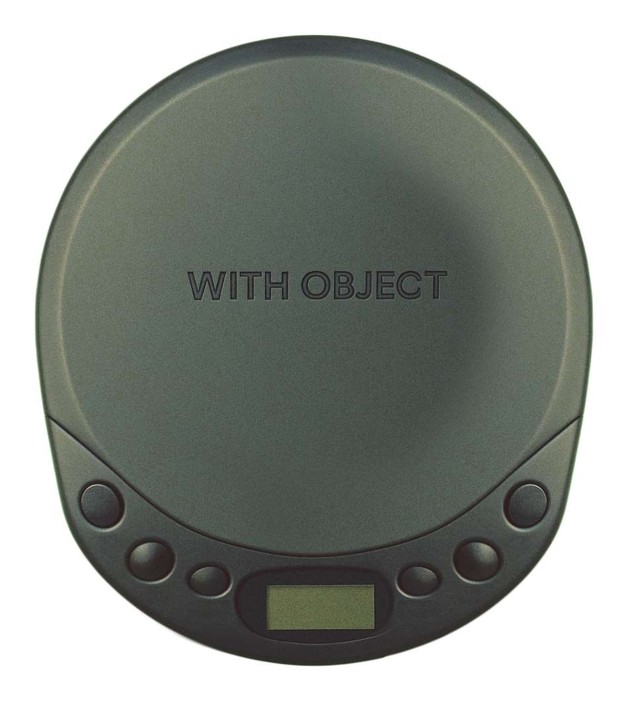

SIGNAL ARCHIVE 01 — HERO
FRAME 01

WORK TITLE
Signal Archive 01
YEAR
2025
TYPE
Video Series
OBJECTIVE
Translate the feeling of digital displacement into a visual system. Pain points: retaining clarity through abstract motion, sound-text sync, non-linear narrative structure.
FINAL OBJECT
A 3-part video sequence that mimics corrupted data restoration. Output included analog-processed sound layers, text overlays, and rephotographed footage encoded as a looping broadcast.


WORK TITLE
Resonance Study 02
YEAR
2024
TYPE
Interactive Installation
OBJECTIVE
Create a responsive environment that reacts to human presence and movement. Challenge: balancing sensitivity with stability, avoiding false triggers.
FINAL OBJECT
A room-scale installation using motion sensors and projected light patterns. Visitors' movements generate evolving visual compositions that persist and layer over time.


WORK TITLE
Data Fragments 03
YEAR
2024
TYPE
Print Series
OBJECTIVE
Visualize the decay and reconstruction of digital information through analog processes. Focus on texture, grain, and information loss.
FINAL OBJECT
A series of 12 large-format prints combining digital glitch artifacts with traditional darkroom techniques. Each piece represents a different stage of data corruption.


WORK TITLE
Temporal Shift 04
YEAR
2023
TYPE
Sound Design
OBJECTIVE
Compose audio that exists in multiple time signatures simultaneously. Technical challenge: maintaining coherence while creating rhythmic displacement.
FINAL OBJECT
A 20-minute composition using layered field recordings and synthesized tones. The piece shifts between 4/4, 7/8, and 5/4 time signatures in overlapping cycles.


WORK TITLE
Object Memory 05
YEAR
2023
TYPE
Sculpture Series
OBJECTIVE
Explore the relationship between digital and physical permanence. How do objects retain information about their creation process?
FINAL OBJECT
Five sculptural pieces cast from 3D-printed molds, each containing embedded NFC chips with creation metadata. Physical forms that carry their digital DNA.